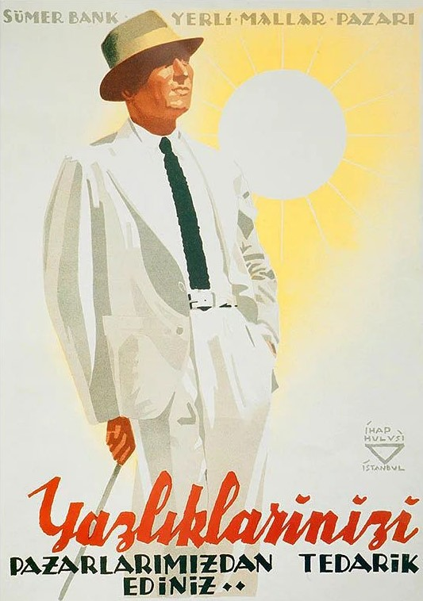
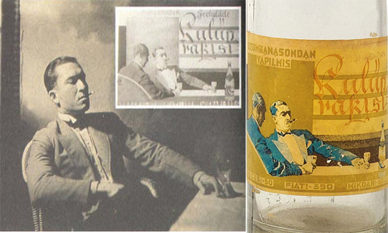
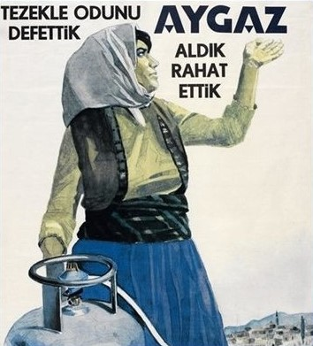

+++
title = "İhap Hulusi Görey"
seotitle="İhap Hulusi Görey Hayatı ve Tasarımları"
description="Uluslararası ilk Türk grafiker. İhap Hulusi Görey, yeni kurulmuş bir devletin ilk uzman tasarımcısı olarak tanınır. Hayatı, afiş, reklam ve logo tasarımları."
url="sayi-9/ihap-hulusi-gorey"
aciklama="Uluslararası ilk Türk grafiker.. Beyoğlu sokaklarında lakabı: 'Şaheser'.. Genç cumhuriyeti afişleyen birey.. Üstad: İhap Hulusi Görey.. Çoğu taşbaskısı olan yüzlerce çalışması ile 50 yıllık bir dönemin endüstri, kalkınma, ticaret ve sosyal yaşamın gelişmelerini belgeledi. İhap Hulusi Görey, yeni kurulmuş bir devletin ilk uzman tasarımcısı olarak tanınır."
type="sayfa"
thumb="/img/ustad-ihap-hulusi-gorey-thumbnail.jpg"
date = "2021-05-05"
sayi=["09"]
sayfa="01"
yazar=["zeynep yarar"]
tags= ["dergi", "sumerbank"]
+++

<div class="container">
    <div class="row">
        <div class="col-md-6"><p>Uluslararası ilk Türk grafiker..</p>
<p>Beyoğlu sokaklarında lakabı: &#39;Şaheser&#39;..</p>
<p>Genç cumhuriyeti afişleyen birey..</p>
<p>Üstad: <strong>İhap Hulusi Görey..</strong></p><p>
   <em
      >Çoğu taşbaskısı olan yüzlerce çalışması ile 50 yıllık bir dönemin
      endüstri, kalkınma, ticaret ve sosyal yaşamın gelişmelerini belgeledi.
      İhap Hulusi Görey, yeni kurulmuş bir devletin ilk uzman tasarımcısı olarak
      tanınır.</em
   >
</p>
<p>1898 Mısır doğumlu Görey için Kahire, üçgeninin başlangıç noktasıdır.</p>
<p>
   İhap Hulusi&#39;nin Babası Ahmet Hulusi, Mısır&#39;ın ünlü mimar ve
   müteahhitlerindendi. Aslen Erzincanlı olan aile, I. Dünya savaşı sırasında
   Kahire&#39;yi İngilizlerin işgal etmesi üzerine İstanbul&#39;a döndü. Daha
   sonra kardeşlerinden Yavuz Görey Türkiye&#39;de ünlü bir heykeltraş, Nihat
   Hulusi de Mısır&#39;da ünlü bir müzeci olmuştur.
</p>
</div>
        <div class="col-md-6">
           {{}}
</div>
    </div>


    <div class="row">
        <div class="col-md-6">
<p>
   20&#39;li yaşlarında Almanyadaki bir ressamla mektuplaşarak ders alan ve
   resimlerini postalayan Görey için 1920 yılı üçgenin ikinci noktası olan
   Münih&#39;e yolculuk yılıydı. Beş yıllık Almanya serüveninin ilk üç yılı
   Heimann Schule Stüdyosu&#39;nda çalışarak, iki yılı ise Kunstgewerbe
   Schule&#39;da okuyarak geçti. Afiş ve resim üzerine aldığı eğitimlerle
   İstanbul&#39;a dönüşü üçgenin son tamamlayıcı noktasıydı.
</p></div>
        <div class="col-md-6">
            <video width="100%" height="100%" loop autoplay>
                <source src="https://www.markut.net/sayi-9/ihap-hulusi-gorey/ihap-hulusi-gorey-ucgeni.mp4" >}}
             </video>
            </div>
    </div>


        <div class="row">
        <div class="col-md-6"><p>
   Alman Afiş Sanatı&#39;nın büyük ustası Prof.Ludwig Hohlwein&#39;ın öğrencisi
   olarak, onun işlerinden çok etkilendiğini görmek mümkün.
   <em>Büyük gölgeli kompozisyonlar ve belirsiz konturlar..</em> Bu etki, İhap
   Hulusi&#39;nin imzasında bile görülebilir.
</p>
<p>
   1923 Cumhuriyet&#39;in ilanından sonra 1928&#39;de Half İnkılabı, bir
   iletişim devrimi niteliğindeydi. Okuma yazma artışıyla basılı işler de arttı.
   Toplumu yeni baştan inşa etme görevinde ise afiş sanatçılarına büyük iş
   düşüyordu. Amaç yalnızca hoş görseller tasarlamak değil, beraberinde topluma
   kimlik kazandırmaktı.
</p>
<p>
   <strong
      >Savaşlardan ve kanla yazılan zaferlerden henüz bir kurumsal kimlik
      edinemeyen Türkiye Cumhuriyeti’nin çalışmaları Görey’e emanet
      edilecekti.</strong
   >
</p></div>
        <div class="col-md-6 text-center">
   {{}}
</div>
    </div>

    <div class="row">
        <div class="col-md-6"><p>
   Avrupa&#39;da 1890&#39;lı yıllarda ortaya çıkan &#39;Art Nouveau&#39; akımı
   afiş sanatını beraberinde getirdi. Bu getirinin Türkiye&#39;ye girmesi
   cumhuriyetin ilk yıllarına denk geldi. Afiş sanatının Türkiye&#39;de yerini
   alışının öncü ismi şüphesiz İhap Hulusi Görey&#39;dir. Genç cumhuriyetin tüm
   grafik işlerinde onun üçgen imzası vardır. Cumhuriyet ideolojisini halka
   ulaştıran kitle iletişimcisidir Görey. Çizdiği insan ve vatandaş imgeleriyle
   bir nevi cumhuriyet propagandacısıdır.
</p>
<p>
   Döneminin kısıtlı teknolojik imkanlarına rağmen yalın ve net tasarımları ilgi
   çekmeyi başarmıştır. Yerli malları, mevsim değişimleri, beykoz kunduraları;
   onun ilginç söylemleri ve çizgileri ile buluşmuş ve duyurulmuştur.
</p></div>
        <div class="col-md-6">
            <video width="100%" height="100%" loop autoplay>
                <source src="https://www.markut.net/sayi-9/ihap-hulusi-gorey/ihap-hulusi-gorey-vatandas-afisi-yeniden-uyarlama.mp4" >
             </video>
           </div>
    </div>

    <div class="row">
        <div class="col-md-4"><blockquote>
   <p>
      “Elli yıllık hayatımda, doğal olarak birçok zorluk yaşadım. Fakat bu
      zorluklara karşın, Türkiye’ye ilk renkli afiş resmini getirmiş bir ressam
      olarak memnun ve bahtiyarım” -<em>İhap Hulusi Görey</em>
   </p>
</blockquote></div>
        <div class="col-md-4">
   {{}}
</div>
        <div class="col-md-4">
   {{}}
</div>
    </div>

    <div class="row">
        <div class="col-md-4"><p>
   İhap Hulusi Görey&#39;in Almanca, İngilizce, Arapça ve Fransızca dillerine
   hakim olması nedeniyle ailesi tarafından memur olması isteniyordu. Ancak o
   kısa süreli çalışmasının ardından memuriyeti reddeterek hayatını resim
   yaparak kazanmakta ısrar etti. İlk olarak çizimlerini &#39;Akbaba
   Dergisi&#39;ne gönderdi. O dönemlerde alışılmadık bir tarzı olan İhap Hulisi
   Görey’i derginin yöneticisi Yusuf Ziya Ortaç:
</p>
<blockquote>
   <p>
      “…İçinden bir karikatür çıktı zarfın. Ama bildiğimiz karikatürlerden
      değil. Ne resim-karikatür, ne karikatür-resim. Alışmadığımız, görmediğimiz
      bir sanat işi. İmza yerinde bir üçgen ve eski harflerle İhap Hulusi, sene
      1923…”
   </p>
</blockquote>
<small>
   sözleriyle anlattı ve aslında çağın ne kadar ilerisinde olduğunu da
   şaşkınlığını gizleyemeden bu sözlerle ifade etmişti.
</small></div>
        <div class="col-md-4">
   {{}}
</div>
        <div class="col-md-4">
   {{}}
</div>
    </div>


    <div class="row">
        <div class="col-md-4">
   {{}}
</div>
        <div class="col-md-4"><p>
   Böylece Görey’in çalışmaları Akbaba dergisinin kapaklarını süslemeye başladı.
   Yeteneği dikkat çekmeye başlayınca reklam dünyası oklarını İhap Hulusi&#39;ye
   çevirdi. İlk reklam siparişini 1927&#39;de İzmir&#39;den aldı ve İnci Diş
   Macunu için afiş tasarladı.
</p>
<p>
   Daha sonra Kulüp Rakı’nın günümüzde bile hala kullanılan etiket tasarımını
   yaptı. Bu etikette muhabbet eden iki kişi ise kendisi ve yakın arkadaşı Fazıl
   Ahmet Aykaç’tır.
</p>
{{}}
</div>
        <div class="col-md-4">
         <p>
            Yine en bilinen ve günümüzde hâla kullanılan eserlerinden biri Kurukahveci
            Mehmet Efendi logosudur.
         </p>
         {{}}

</div>
    </div>


    <div class="row">
        <div class="col-md-4">
   {{}}
</div>
        <div class="col-md-4"><p>
   Anadolu&#39;da okuma yazma seferberliği ilan edilirken Atatürk&#39;ün özel
   isteği üzerine &#39;Alfabe&#39;nin kapağını tasarladı. Bu kapakta Atatürk
   manevi kızı Ülkü&#39;ye alfabeyi öğretir ve arkada Ankara Kalesi vardır. 1970
   yılına kadar Alfabe bu kapakla basılmıştır.
</p>
<p>
   Devlet Hava Yolları, Demir Yolları, Deniz Yolları, Tekel, Belediye
   Tahvilleri, Sümerbank, Emlak Kredi, Tayyare Piyangosu (bugünki adıyla Milli
   Piyango) vb. kurumların kurum kimliğini oluşturdu. Kızılay ve Yeşilay gibi
   birçok özel kuruma da hizmet etti.
</p>
<p>
   Yapı Kredi&#39;nin leyleği, Ziraat Bankası&#39;nın çiftçisi, İş
   Bankası&#39;nın kumbarası hep Görey&#39;in kalemindendi. Kağıt paralarda
   &#39;Koca Tepedeki Atatürk&#39;, Milli Piyango etiketleri, Birinci Sigara
   ambalaj tasarımı yine hep aynı kişiden..
</p></div>
        <div class="col-md-4">
   {{}}
<small>Fotoğraf: Şahsenem Göksu Göktürk</small></div>
    </div>


   {{}}


    <div class="row">
        <div class="col-md-5">
   {{}}
<p>
   Aygaz için “Tezekle odunu defettik aygaz aldık rahat ettik.” söylemi de onun
   afişinden dillendi.
</p></div>
        <div class="offset-md-1 col-md-6">
   {{}}

<p>
   Alman Bayer firmasının logosu, İngiliz viskisi John Haig’in etiketi ve
   İtalyan Cinzano ve Fernet Branca’sının afişinin de Görey&#39;e ait oluşu,
   onun sadece Türkiye ile sınırlı kalmadığını da gösteriyor.
</p></div>
    </div>


   {{}}

<p>
   Suluboya çalışmalarının yanı sıra, son yıllarında hat sanatını modernize
   ederek başarılı örnekler veren İhap Hulusi Görey, ömrünün son yıllarında
   çizim yeteneğini yitirdi. Tanıtımını yaptığı hiçbir kurum tarafından
   sigortalanmadığı için son yıllarını Şişli&#39;deki evinde sefalet içinde
   geçirdi. Son günlerinde Milli Piyango için yaptığı çizimlerden dolayı cüzi
   miktarda maaş bağlandıysa da bu parayı kullanmaya ömrü yetmedi.
</p>
<p>İhap Hulusi Görey, 1986&#39;da İstanbul&#39;da 88 yaşında vefat etti.</p>
<p><em>86 yaşında ise şunları yazmıştır:</em></p>
<blockquote>
   <p>
      &#39;&#39;2 yıldır pek bir şey yapamıyorum. Parmaklarım çalışmıyor,
      çizemiyorum. Bunalımdayım, sürekli sıkıntı içindeyim. Yaşın yaptığı
      sıkıntı bunlar..&#39;&#39; -İhap Hulusi Görey
   </p>
</blockquote>

    <div class="row">
        <div class="col-md-6">
   <video width="100%" height="100%" loop autoplay>
    <source src="https://www.markut.net/sayi-9/ihap-hulusi-gorey/ihap-hulusi-gorey-kapi-surgusu.mp4" >
 </video>

<small>Kendi evinin kapısı için yaptığı sürgü</small></div>
        <div class="col-md-6">
   {{}}
<small>Kendisi için tasarladığı sigaralık</small></div>
    </div>


<p>
   Ender Merter&#39;in
   <strong>&#39;Müsellesten Üçgene&#39; Koleksiyonu&#39;</strong>nda; İhap
   Hulusi&#39;nin yaptığı eserler ve bu eserlere ilham kaynağı olmuş kişisel
   eşyaları mevcuttur. Bu koleksiyon, 15 Ocak 2010&#39;da
   <strong>Marmara Üniversitesi Sultanahmet Rektörlüğü&#39;</strong>nde bulunan
   <strong>Cumhuriyet Müzesi</strong>&#39;ne Ender Merter tarafından
   bağışlanmıştır.
</p>


<h2 id="markut-ekibi-müsellesten-üçgene-sergisinde">
   Markut Ekibi &#39;Müsellesten Üçgene&#39; Sergisinde
</h2>


   {{}}

<small>Fotoğraf: İslam Amangulyev</small>

   {{}}

<small>Fotoğraf: İslam Amangulyev</small>

   {{}}
<small>Fotoğraf: İslam Amangulyev</small>

   {{}}
<small>Fotoğraf: İslam Amangulyev, Şahsenem Göksu Göktürk</small>
   {{}}

<small>Fotoğraf: Şahsenem Göksu Göktürk</small>

   {{}}

<small>Fotoğraf: Şahsenem Göksu Göktürk</small>

   {{}}
<small>Cizlavet ayakkabı afişleri</small>

   {{}}
<small> Fotoğraf: Zeynep Dağ.</small>
<p>
   <strong
      >Markut Sayı: 4 bkz.
      <a
         href="https://www.markut.net/sayi-4/sumerbank-fabrika-yatirim-ekonomi-tasarim/"
         >(Sümerbank &quot;Fabrika-Yatırım-Ekonomi-Tasarım&quot;)</a
      ></strong
   >
   yazımı da inceleyebilirsiniz.
</p>

    
<button
class="btn markutbtn"
data-target="#my-collapse"
data-toggle="collapse"
aria-expanded="false"
aria-controls="my-collapse"
>
Kaynaklar
</button>
<div id="my-collapse" class="collapse">
<pre> <small><code>  
http://www.endermerter.com/ihg.html

https://www.biyografi.info/kisi/ihap-hulusi-gorey

http://ihaphulusigorey.gen.tr/biyografi.html

https://tr.wikipedia.org/wiki/İhap_Hulusi_Görey

https://www.anilkagit.com/turkiye-grafik-sanatinda-ilklerin-insani-ihap-hulusi-gorey/

https://celalyesil.medium.com/i̇hap-hulusi-görey-kimdir-1b421a0a70e9

https://www.researchgate.net/publication/257716631_Ihap_Hulusi_Gorey_and_his_Posters_The_Famous_Two_that_Shaped_the_Public_in_Republic_Period_in_Turkey/fulltext/026e537f0cf26271f589dae8/Ihap-Hulusi-Goerey-and-his-Posters-The-Famous-Two-that-Shaped-the-Public-in-Republic-Period-in-Turkey.pdf

https://onedio.com/haber/turk-grafik-sanatinin-kurucusu-ihap-hulusi-gorey-514460

https://www.youtube.com/watch?v=F6RooPefNBc&list=LL&index=1

https://www.youtube.com/watch?v=Y2ueMUJkhXs&list=LL&index=2

https://www.youtube.com/watch?v=qnD5JUtPZIo&list=LL&index=3
  </code></small></pre>
</div>

</div>